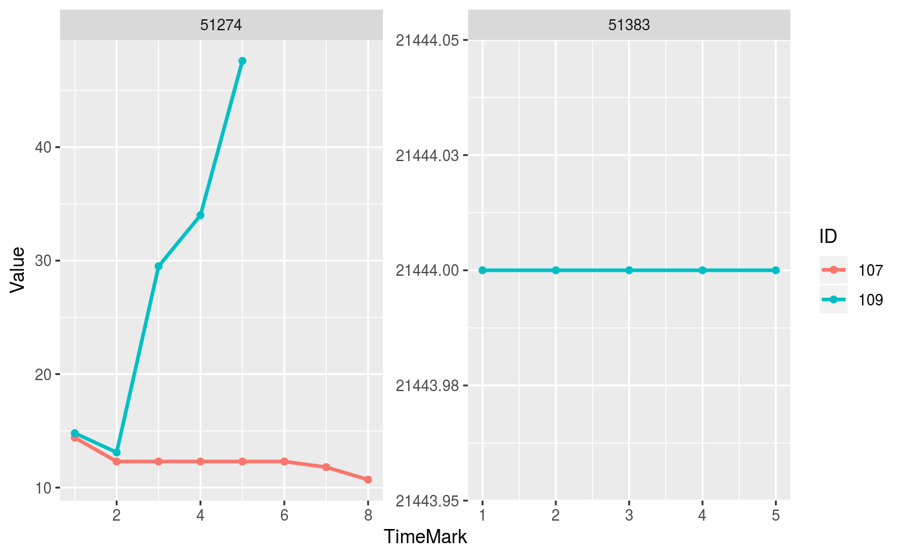

plotTimeSeriesLab plots line charts of laboratory data.
plotTimeSeriesLab( labData, idColName, labItemColName, timeMarkColName, valueColName, timeStart = NULL, timeEnd = NULL, abnormalMarkColName = NULL )
| labData | a file or dataframe of laboratory test data with at least 4 columns about patient ID, lab item, test value and test date, respectively. |
|---|---|
| idColName | the column name that records patient ID in labData. |
| labItemColName | the column name that records lab item in labData. If lab code is combined by multiple columns, then just simply add |
| timeMarkColName | the column name that records time in labData. Time can be time window or be real date. |
| timeStart | any starting time point of interesting. It can be time window or be real date depending on the selection of |
| timeEnd | any ending time point of interesting. It can be time window or be real date depending on the selection of |
| abnormalMarkColName | the column name that records abnormal mark in labData. It is optional. |
One or multiple line chart of temoral laboratory results of one or multiple patient(s).
This function provides an overview and temporal changes of laboratory tests. If abnormalMarkColName provided, then "H" mark is displayed by "▲" icon. Similarly, "L" mark is displayed by "▽" icon. Time mark can be continuous or discrete, but labData should be longitudinal.
timeSeriesData <- getTimeSeriesLab(labData = labMIMIC, idColName = SUBJECT_ID, labItemColName = ITEMID, dateColName = CHARTTIME, valueColName = VALUENUM, indexDate = first, gapDate = 360, completeWindows = TRUE) imputedData <- imputeTimeSeriesLab(labData = timeSeriesData, idColName = ID, labItemColName = ITEMID, windowColName = Window, valueColName = Max, impMethod = mean)#> Error in as.data.table(labData): could not find function "as.data.table"imputedData <- imputedData[(ID == "107" | ID == "109") & (ITEMID == "51274" | ITEMID == "51383"),] plotTimeSeriesLab(labData = imputedData, idColName = ID, labItemColName = ITEMID, timeMarkColName = Window, valueColName = Max)